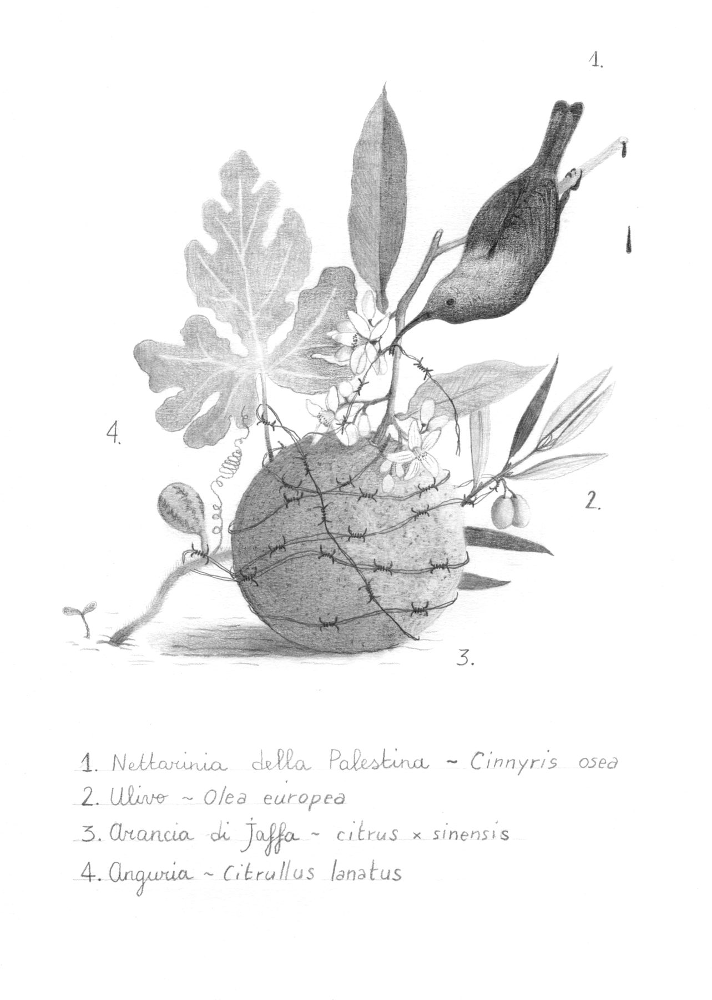
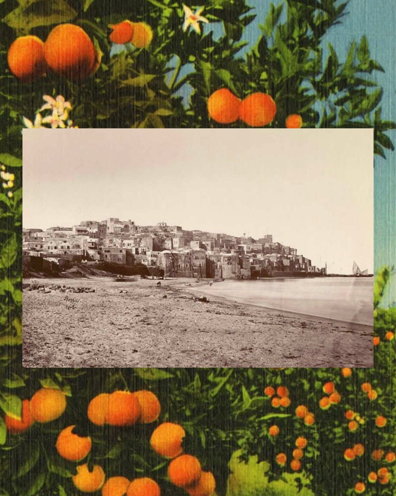
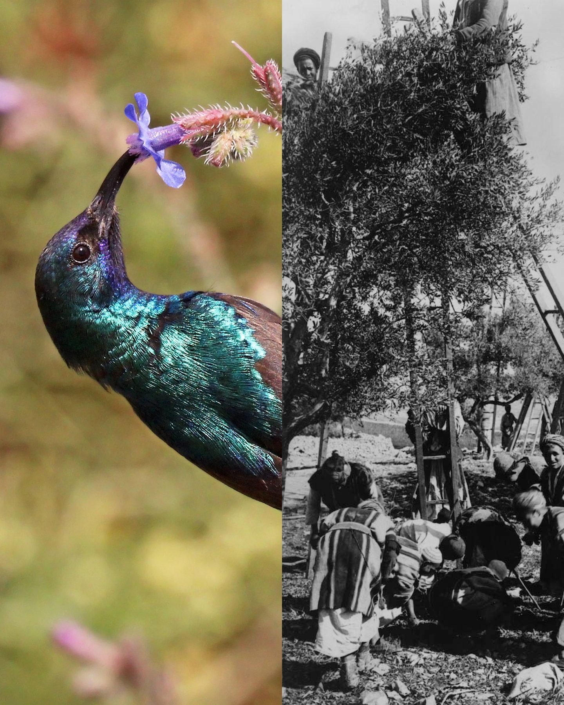

Disegno realizzato per una raccolta fondi a sostegno del popolo palestinese. Un’opera simbolica che intreccia la natura e la resistenza della terra: vi figurano la nettarina della Palestina, il celebre arancio di Jaffa, un ostinato germoglio di cocomero e il prezioso ramo d’ulivo. Ogni elemento dialoga con tragedia storica e pregressa di una terra ferita ma indomita.

